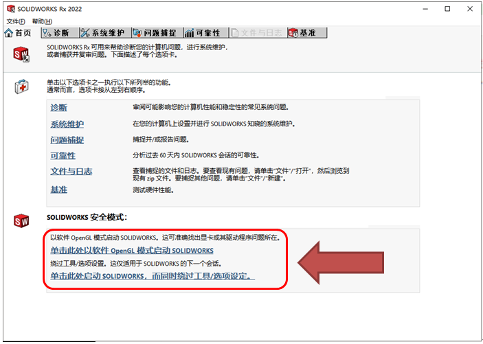
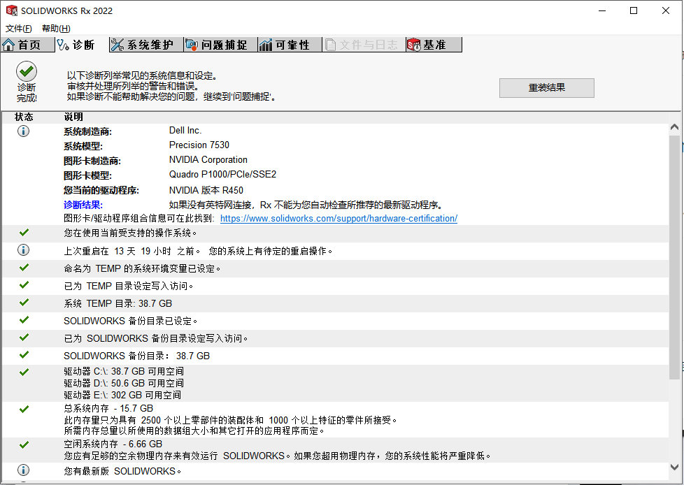
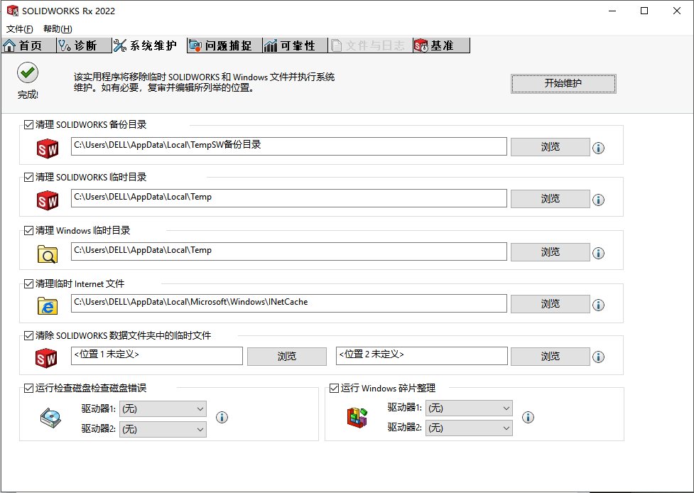
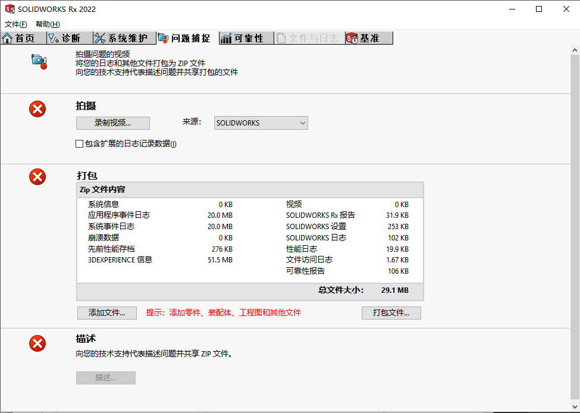
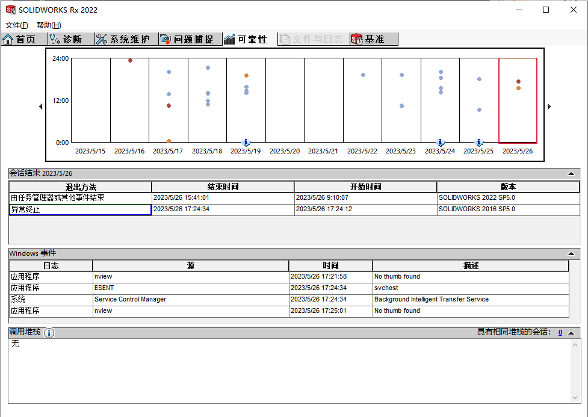
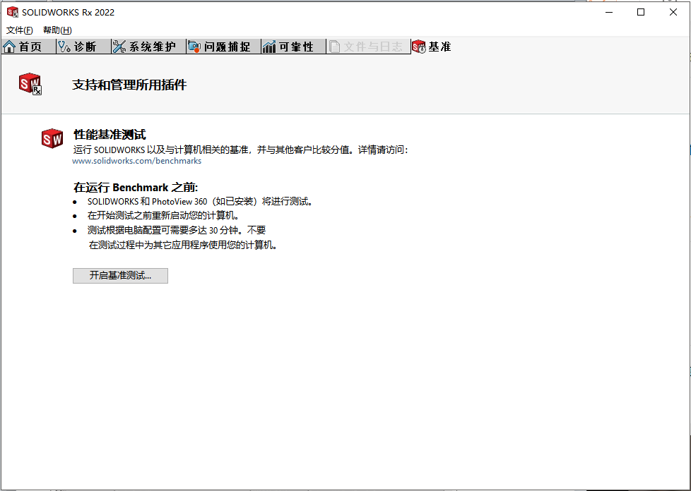

RX 工具
RX-首页-SOLIDWORKS 安全模式：
- 单击此处以软件 OpenGL 模式启动 SOLIDWORKS
用于排除因”独立显卡”的兼容性导致的图像显示异常问题，常见问题通常会出现在驱动修改后发生。问题包括：图像显示异常透明，图像加载慢，显示崩溃等。
- 单击此处启动 SOLIDWORKS，而同时绕过工具/选项设定
用于排除因软件设置或注册表异常导致的软件设置问题，常见问题奇奇怪怪，反正可以作为排除软件设定问题的依据手段。
RX-诊断
对当前电脑环境的诊断可以获知电脑的配置情况
RX-系统维护
清理临时文件的功能
RX-问题捕捉
用于录制和打包 RX 问题日志，这文件将对我们分析 SW 问题起到作用
2023新功能：在【问题捕捉-拍摄】项目里，可以勾选包含3DEXPERIENCE调试日志。
RX-可靠性
参考近期软件使用情况（包括”正常”、”异常终止”、”事件结束”的情况），可以有初步的问题判断。
RX-文件与日志
默认是灰色的，在使用【文件-打开 RX 压缩包】时才有显示。此时你将可以在你电脑打开其他用户环境的 RX 日志进行分析。日志在本地电脑的路径一般如下：
1 | C:\Users\<Usersname>\AppData\Local\SolidWorks |
RX-基准
这个好像是跑分用的
问题捕捉内容

问题内容简单介绍
3DEXPERIENCE Info
3DEXPERIENCE 信息
COSMOS_CU.reg.txt
[HKEY_LOCAL_MACHINE\SOFTWARE]一些注册表设置
COSMOS_LM.reg.txt
[HKEY_LOCAL_MACHINE\SOFTWARE]
CXPA
SolidWorksPerformance.log
DiagnosticsReport.xml
EventLogApplication.evt
应用程序事件日志，是Window管理工具的内容
EventLogSystem.evt
系统事件日志，是Window管理工具的内容
FileAccess.log
文件访问日志
Flexlm.reg.txt
ReliabilityReport.xml
可靠性报告
SolidWorksPerformance.log
solutionmessages.xml
CrashSolutions
SWcuReg.reg.txt
SOLIDWORKS设置
[HKEY_LOCAL_MACHINE\SOFTWARE]一些注册表设置
SWlmReg.reg.txt
SOLIDWORKS设置
[HKEY_LOCAL_MACHINE\SOFTWARE]一些注册表设置
swxJRNL.swj
打开RX捕捉问题时的宏操作。类似swp文件
SystemInfo.nfo
系统信息，是Window管理工具的内容